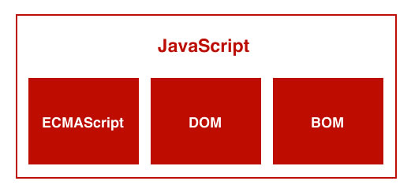
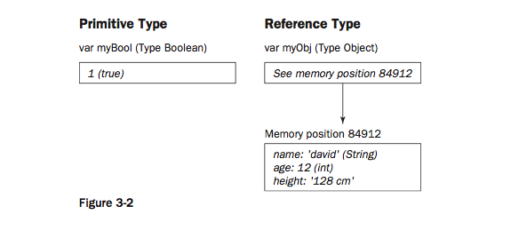

JavaScript
JavaScript in the Browser

JavaScript in the Browser
-
ECMAScript
Sintaxis, Tipos de datos, Declaraciones, Palabras clave, Palabras reservadas, Operadores, Objetos, ...
-
Document Object Model (DOM)
API para manipular XML. Permite tener el control sobre el contenido, su estructura y su presentación.
-
Browser Object Model (BOM)
API para interactuar con el navegador. Capacidad para abrir ventanas, mover y redimensionar, objeto
navigatorcon información sobre el navegador, objetolocationcon información sobre la página cargada, soporte para cookies, ...
Ejecutar JS en el navegador I
Con la etiqueta <script>
-
Inline scripts
<script type="text/javascript" charset="utf-8"> alert('hola'); </script> -
External scripts
<script src="javascripts/external_script.js"></script> -
Deferred scripts
<script defer="defer"></script>
Ejecutar JS en el navegador II
-
Event-driven scripts
<body onload="function(){ alert('página cargada') }"> -
Dynamic script loading
<script type="text/javascript" charset="utf-8"> function loadScript(src){ var headObj = document.getElementsByTagName( 'head' )[0], newScriptObj = document.createElement( 'script' ); newScriptObj.type = 'text/javascript'; newScriptObj.src = src; headObj.appendChild( newScriptObj ); } </script>
Ejecutar JS en el navegador III
-
Javascript in URL's
javascript:alert('Hola!')<a href="javascript:alert('Hola!')">Saluda</a>
JavaScript Basics
Herencia por prototipo
Cada instancia de un objeto clona todos los métodos y propiedades del prototipo en dicha instancia.
function Perro(name){
this.name = name
}
Perro.prototype = {
ladrar : function(){
console.log('Soy '+this.name+' y estoy ladrando');
}
}
// Nueva instancia de Perro
var maggie = new Perro('Maggie');
// La instancia hereda los métodos del prototipo
maggie.ladrar();Literales
Un literal es el valor de cualquier dato representado directamente en el código.
true 2.3 /regex/g null "hola" [1, 2, 3] ...
Tipos de literales I
-
Números enteros
var a = 10; // decimal, base 10 var b = -10; // decimal, base 10 var c = 031; // octal, base 8, número 25 var d = 0x3214 // hex, base 16, número 12820 -
Números decimales
var a = 3.141516; var b = .33333333; var c = 9.2E4; Notacion exponencial, número 92000 var c = -9.2e4; Notacion exponencial, número -92000
Tipos de literales II
-
Booleanos
var a = true; var b = false; -
Cadenas de caracteres
var a = "hola"; var b = 'hola'; var c = "CD's"; var d = 'CD\'s'; var e = "EL dijo \"Hola!\"";
Tipos de literales III
-
Arrays
var a = ["rojo", "verde", "azul"]; var b = ["rojo", 12, false, 1.2e10, ["rojo", "verde", "azul"], null]; var c = [1, 2, 3, , 5]; var e = [a, b, c]; // Array multidimensional -
Expresiones regulares
var a = /.jpg/; var b = new RegExp(".jpg"); -
Objetos
var a = { nombre : 'Javier', 'Primer apellido' : 'Sánchez-Marín' };
Sentencias
Es un comando para un navegador, una igualación, una comparacion, una invocación... Cada sentencia suele estar delimitada por ;
var a = 1; var b = 2;Bloques
Los bloques son sentencias o grupos de sentencias delimitadas por {}
-
Generan scope
La variable a es accesible fuera del bloque.
if( !a ){ var a = true; } -
No generan scope
La variable a no es accesible fuera del bloque.
function saluda(){ var a = 'hola'; return a; }
Closures
Una función que esta ligada a variables externas declaradas en un scope superior.
function addToTen(num){
return function(){
return num+10;
}();
}
addToTen(5); // 15
Después vemos mas ejemplos.
Palabras reservadas
break, case, catch, continue, debugger, default, delete, do, else, finally, for, function, if, in, instanceof, new, return, switch, this, throw, try, typeof, var, void, while, with
Palabras reservadas para su uso en el futuro
class, enum, export, extend, import, super, implements, interface, let, package, private, protected, public, static, yield
Variables I
-
Declaración de una variable
var a; -
Declaración de una variable y asignación de valor
var b = 10; -
Declaración múltiple
var a, b, c, d = 1; var a = 1, b = 2, c = 3, d = 4;
Variables II
-
Declaración implícita
Si se declara una variable sin
var, la variable es asignada al scope global. En este casowindow. Es buena practica utilizar siemprevarpara la declaración.z = 10; //Esto es lo mismo que window.z = 10; -
Identificadores
Es la cadena de caracteres que da nombre a una variable.
- Case Sensitive
- Tienen que empezar por una letra o
_ - Pueden contener números pero no empezar por uno
- No pueden contener espacios, signos de puntuación, operadores matemáticos, operadores lógicos ni caracteres extraños.
_y$son una excepción.
Tipos de datos
-
Primitivos
- Number
- String
- Boolean
- --
- null
- undefined
-
De Referencia
- Objects
- Array
- Function
- Date
- RegExp
- Error
Primitivos vs Referencia
Datos Primitivos
Si cambiamos el valor de una copia NO se refleja en el original. Son valores diferentes y se almacenan por separado.
var myNum = 100;
var myNum2 = myNum; // 100
myNum2 = 101;
console.log(myNum); // 100
console.log(myNum2); // 101
Datos por Referencia
Si cambiamos el valor de una copia se refleja en el original. Las dos variables hacen referencia a la misma posición en memoria.
var myObj = {name: "David", age: 12};
var myObj2 = myObj;
myObj2.name = "Simon";
console.log(myObj.name); // "Simon"
console.log(myObj2.name); // "Simon"
Esto tambien aplica a las variables pasadas como argumentos a una función. Veremos mas adelante el porqué.
null y undefined
var a;Esta variable hasta que se le asigne un valor es de tipo undefined.
null indica un valor vacio.
Cuando una variable es de tipo undefined, ha sido creada pero no tiene un valor. Cuando es de tipo null, ha sido creada y se le ha asignado un valor vacio.
Determinar el tipo de un dato
Para ello tenemos el operador typeof
var a = "hola!";
console.log(typeof a); // "string"
Es un operador no una función. Si lo veis así:
typeof(a);Lo que esta entre paréntesis, se esta evaluando como una expresión. No es una invocación pasando un argumento.
Valores devueltos por typeof
| Tipo de dato | Resultado de typeof |
|---|---|
| String | "string" |
| Number | "number" |
| Boolean | "boolean" |
| Null | "object" |
| Undefined | "undefined" |
| Object | "object" |
| Function | "function" |
Conversión implícita de tipos I
A la hora de hacer operaciones entre tipos de datos diferentes, JavaScript hace conversiones de datos "automáticas".
"3.1415"-1 // 2.1415 (number)"3.1415"+1 // "3.14151" (string)var myNum = "3.1415";
if(myNum){ // myNum es convertida automáticamente a booleano
alert('existe');
}Conversión implícita de tipos II
| Tipo de dato | Conversión a Número | Conversión a Booleano | Conversión a String |
|---|---|---|---|
| Null | 0 | false | "Null" |
| Undefined | NaN | false | "Undefined" |
| Number | - | false si 0 ó NaN si no true |
NaN o la la representación del número como cadena |
| Boolean | 1 si true 0 si false |
- | "true" or "false" |
| String | El valor númerico de la cadena si es un número si no NaN |
false si length = 0 si no true |
- |
| Object | NaN | true | si el objeto existe object.toString() si no "undefined" |
Forzando la conversión de tipos
-
parseFloat(valor)Fuerza una cadena de caracteres a número decimal.
parseFloat("2.13"); //2.13 (number) -
parseInt(valor)Fuerza una cadena de caracteres a número entero.
parseFloat("2.13"); //2 (number) parseFloat("25px"); //25 (number) -
Object.toString();Devuelve la representación de cualquier objeto como cadena.
({name : "Javi"}).toString(); // "[object Object]" (string)
Conversión implícita de tipos de datos Compuestos a Primitivos
Si el objeto existe evalua a true y si el objeto es undefined evalue a false
if(document.body){ // document.body es un objeto del DOM
alert('hay body!');
}Lo que hace JavaScript en la mayoría de los casos es convertir a string usando valueOf() y despues toString().
[123,123,123].valueOf().toString(); // "123,123,123"Primitivos vs Objetos Primitivos
var myNum1 = 10;
var myNum2 = new Number(10);
console.log(typeof myNum1); // "number";
console.log(typeof myNum2); // "object";
var myString1 = "hola";
var myString2 = new String("hola");
console.log(typeof myString1); // "string";
console.log(typeof myString2); // "object";
Expresiones, Operadores y Sentencias
Expresiones
En matemáticas, una expresión es una combinación coherente de símbolos que resultan en un único valor.
"Hola"
myVar
myNum * 150
10.2e3
12 > 3
Operadores
Permiten hacer operaciones con datos. Dados uno o dos operandos se obtiene un resultado.
de Asignación
Lógicos
Combinacionales
de Comparación
Otros
Operadores de Comparación
Permiten hacer operaciones con datos. Dados uno o dos operandos se obtiene un resultado.
== (Igual)
=== (Exactamente igual)
!= (No igual)
!== (No exactamente igual)
< (Menor que)
> (Mayor que)
<= (Menor o igual que)
>= (Mayor o igual que)
Operadores de Asignación
| Operador abreviado | Significado |
|---|---|
| x += y | x = x + y |
| x -= y | x = x - y |
| x *= y | x = x * y |
| x /= y | x = x / y |
| x %= y | x = x % y |
| x <<= y | x = x << y |
| x >>= y | x = x >> y |
| x >>>= y | x = x >>> y |
| x &= y | x = x & y |
| x ^= y | x = x ^ y |
| x |= y | x = x | y |
Operadores Lógicos
| Operador | Uso | Descripción |
|---|---|---|
| && | expr1 && expr2 | (AND lógico) Devuelve expr1 si la expresión puede convertirse a falso; de otro modo, devuelve expr2. Cuando se emplea con valores booleanos, && devuelve true cuando ambos operandos son verdaderos; si no, devuelve false. |
| || | expr1 || expr2 | (OR lógico) Devuelve expr1 si puede convertirse a verdadero; de otro modo devuelve expr2. Cuando se emplea con valores booleanos, el operador || devuelve true si alguno de los operandos es verdadero; si ambos operandos son falsos devuelve false. |
| ! | !expr | (NOT lógico) Devuelve falso si su único operando puede convertirse a verdadero; de otro modo, devuelve verdadero. |
Operadores Aritméticos
| Operador | Descripción | Ejemplo |
|---|---|---|
| % (Módulo) |
Operador binario. Devuelve el resto de la división entera entre sus dos operandos. | 12 % 5 devuelve 2. |
| ++ (Incremento) |
Operador unitario. Suma uno a su operando. Si se usa como prefijo (++x), devuelve el valor de su operando después de la suma; si se usa como sufijo (x++), devuelve el valor de su operando antes de sumarle uno. | Si x es 3, entonces ++x establece x a 4 y devuelve 4, mientras que x++ establece x a 4 y devuelve 3. |
| -- (Decremento) |
Operador unitario. Resta uno a su operando. Su funcionamiento es análogo al del operador de incremento. | Si x es 3, entonces --x establece x a 2 y devuelve 2, mientras que x-- establece x a 2 y devuelve 3. |
| - (Cambio de signo) |
Operador unitario. Devuelve su operando cambiado de signo. | Si x es 3, entonces -x devuelve -3. |
Otros operadores
,
? :
delete
.
in
instanceof
new
typeof
void
https://developer.mozilla.org/es/Gu%C3%ADa_JavaScript_1.5/Operadores/Operadores_especiales
Sentencias
block {}
if (true){
//expresión
}if...else
if (true)
//expresión;
else
//expresión;
if (true){
//expresión
}else{
//expresión
}
if (true)
//expresión
else if (1){
//expresión
}
else if (2){
//expresión
}
switch
switch(expresion){
case label1:
//statements
[break;]
case label2:
//statements
[break;]
default:
//statements
[break;]
}
En JavaScript, NO hay mucha diferencia de rendimiento respecto al if...else
Como buena practica, cerrar siempre con break; para asegurarnos de que el flujo de ejecución sigue fuera del switch.
for
for([initializer]; [test_condition]; [increment_expression]){
...
}
for(var myLoop = 0; myLoop < 10 ; myLoop++){
...
}
Iteradores múltiples
for(var myLoop = 0, myNumber = 10; myLoop < 10 ; myLoop++, myNumber--){
...
}
for..in
Itera por los indices
for (variable in object)
...
for(methods in window){
...
}do..while
do
...
while (expresion);
do{
...
}while (expresion);
break, label and continue
Ayudan a tener el control sobre estructuras de loop y bloques.
for (var i = 0; i < 10; i++){
if(i == 3) break;
}outer_loop:
for(i=0;i<5;i++) {
for(j=0;j<5;j++) {
break outer_loop;
console.log('inside', i, j);
}
console.log('outside', i);
}
var myArray = [1,2,3,4,5,6,7,8,9,10,11,12,13,14,15,16]
for(var i = 0; i < myArray.length; i++){
if(myArray[i] < 5) continue;
console.log(myArray[i]);
}Function
function name([param] [, param...]){
}var myFunction = new Function();var myFunction = function(){};return
Corta el flujo de ejecución de la función y devuelve un valor si se le especifica.
var myFunction = function(x, y){
return x*y;
};throw
Manejo de errores
throw expresionthrow "This is an error"{problem: 'dadasdas', info: 'dasdasd', data : new Date()}try..catch..finally
Manejo de errores
try {
tryStatements
}catch(exception){
catchStatements
}[finally {
finallyStatements
}]var
var indentifier = [= value][, identifier2 [= value2]] [...];with
with(document.body.style){
background
}/
#